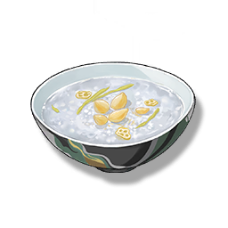

Golden and Silver Lotus Seed Soup
Supplies

Increases the attack of all Resonators in the team by 120 points and Crit. Rate by 6% for 30 minutes, only effective for the player's Character in multiplayer games.
Strengthening the body and maintaining health is the key. The combination of the two Ingredients, gold and silver lotus seeds, is beneficial for warming and replenishing the body, and for calming and refreshing the mind. This is the first health supplement recipe that Jianxin learned during her mountain retreat, and it is also one of her most frequently made medicinal meals.